A messaging product people weren’t using
PatientPop helped small medical practices attract new patients online. Its text messaging service was a paid add-on with low adoption, and even practices that subscribed rarely used it. Leadership wanted more subscriptions and more regular use.
Our research found usability problems with message syncing, threading, and showing when new messages arrived. We documented those for Engineering to fix. Practices also told us their patients preferred to call, so we looked for ways to introduce patients to texting before they needed to contact the front desk.
Giving patients more ways to start a conversation
Most PatientPop customers were small practices, often with one person at the front desk checking in patients, answering questions, and doing paperwork while the phone rang. A missed call could mean a missed new patient.
We looked at what Twilio could add without significantly raising costs for PatientPop or its customers. Two solutions came out of that work.
Web-to-text let visitors start a text conversation from a practice’s website.
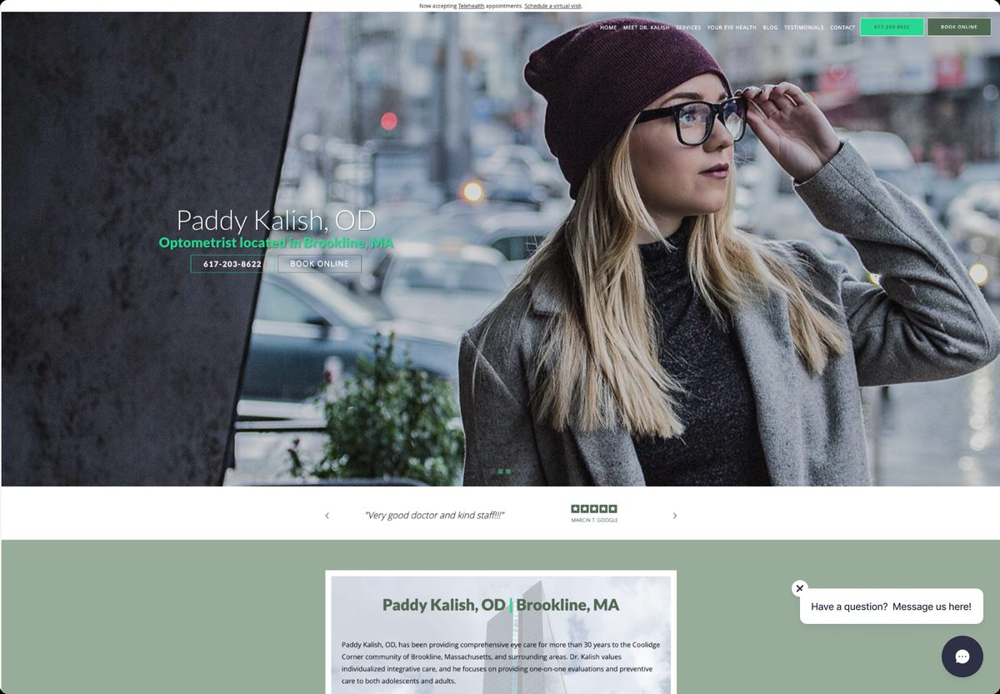
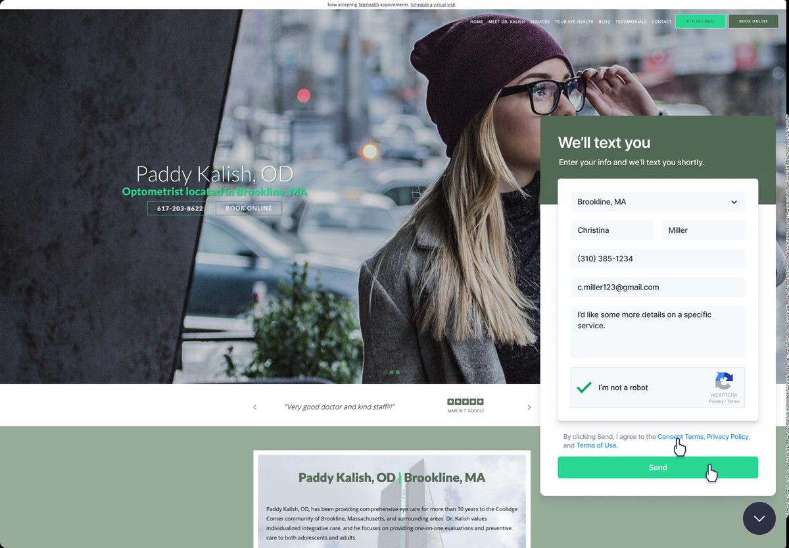
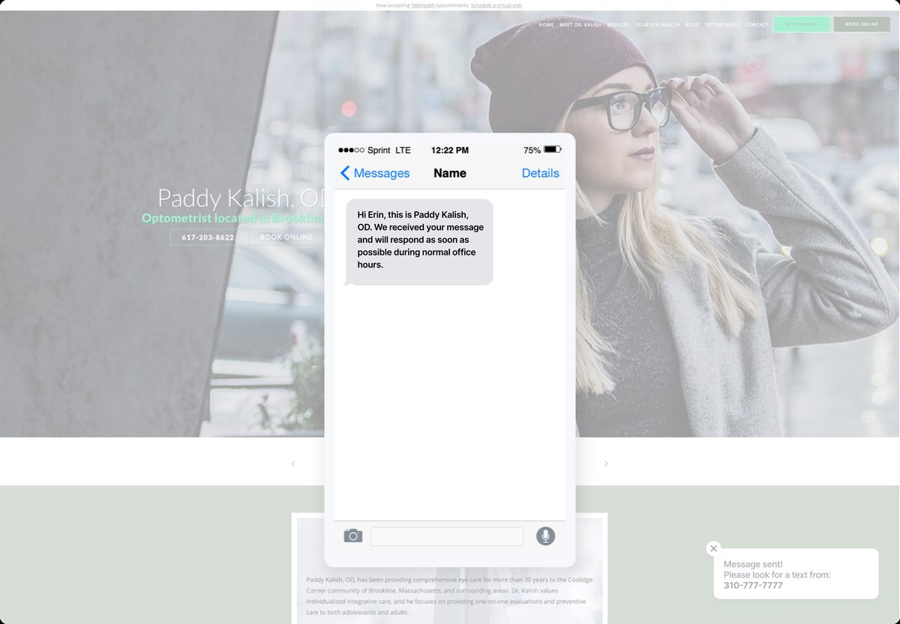
An automated attendant let callers continue by text. It collected initial information, like whether they wanted to schedule an appointment, and routed the conversation to the front desk. Callers could still talk to someone.
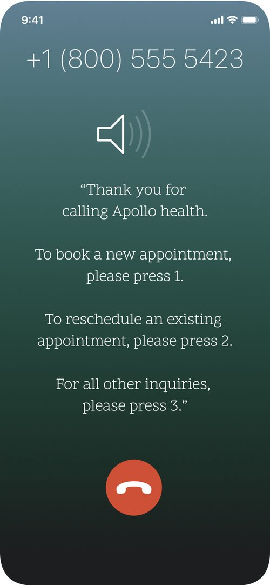
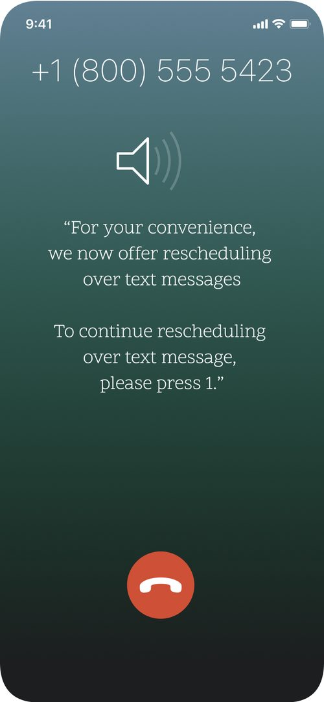
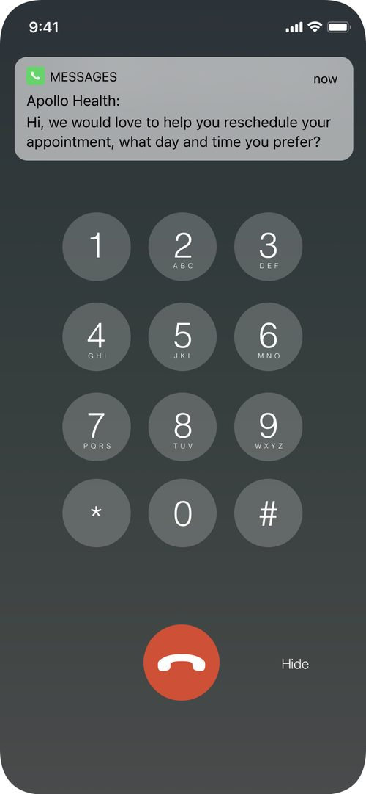
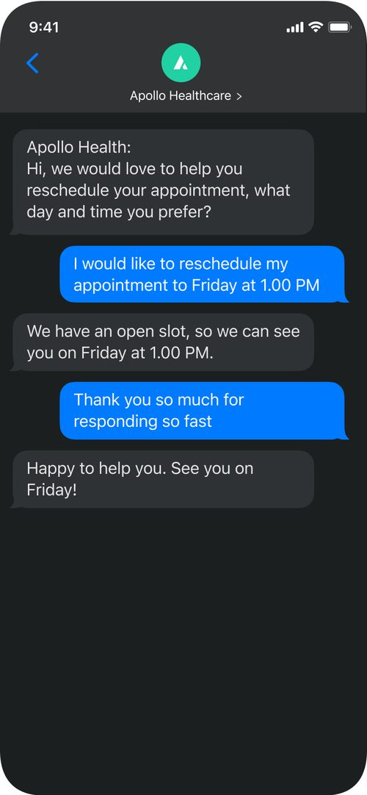
These were separate initiatives with different product owners. I worked across both to bring them together into one offering: PatientPop Connect.
Different practices needed different options
I worked with Product and Engineering to design automated attendant flows in Twilio. We tested alternatives with practices, and I ran customer sessions to learn what worked and what needed to change.
We expected a fairly standard setup to work. Smaller practices were comfortable with the default messages, but larger practices needed English and Spanish options, their own recorded greetings, and custom messages for situations like after hours.
We expanded the configuration options while keeping the default setup simple. Practices could get started without configuring everything, then make changes after activation.
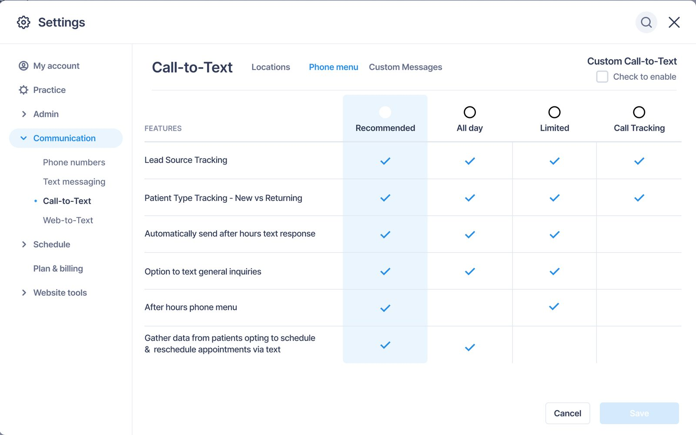
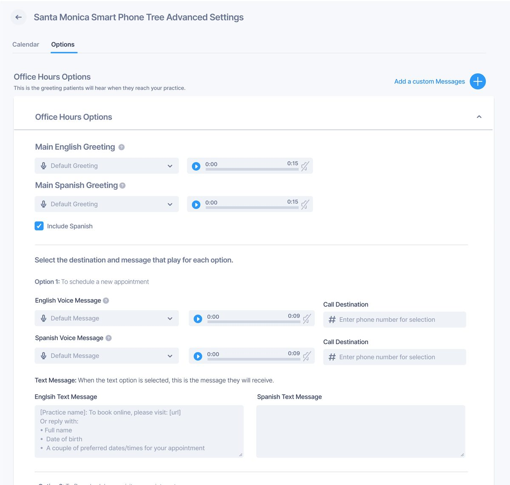
Making the phone number change understandable
The phone number change was one of the biggest problems we found in onboarding testing.
Connect needed a Twilio number for the automated attendant. The practice’s office number stayed the same, but the tracking or vanity number shown through PatientPop could change. Some practices already used that number in their own materials, and some patients recognized it.
Testing an early version of onboarding, before we built the full self-service setup, showed we needed to explain the change earlier and more clearly. We created an onboarding video about what would change and how it would affect the practice. I helped write the script and tested it with users, changing it based on what they understood and what resonated with them. When we tested the video, practices understood the implications, although some still had concerns.
We also added guidance for telling patients about the change, offered some practices the option of keeping both numbers, and explored letting practices activate Connect without turning on the automated attendant right away.
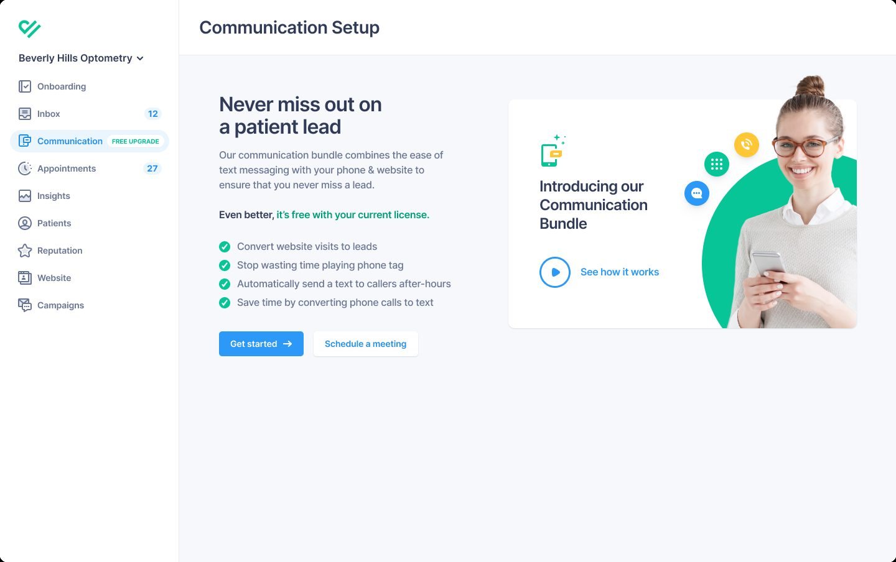
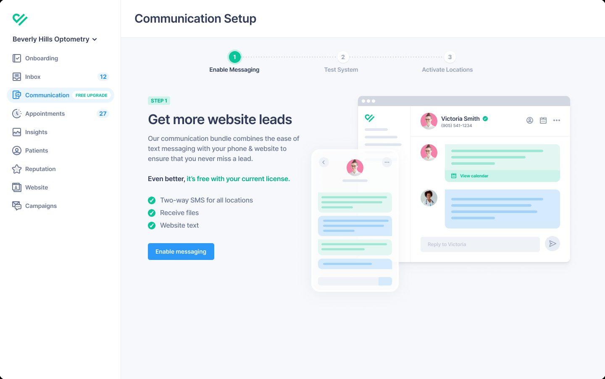
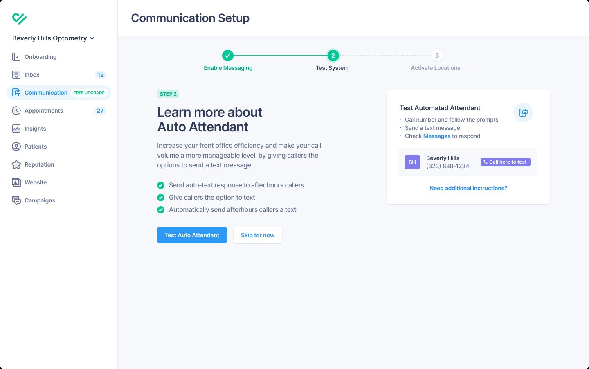
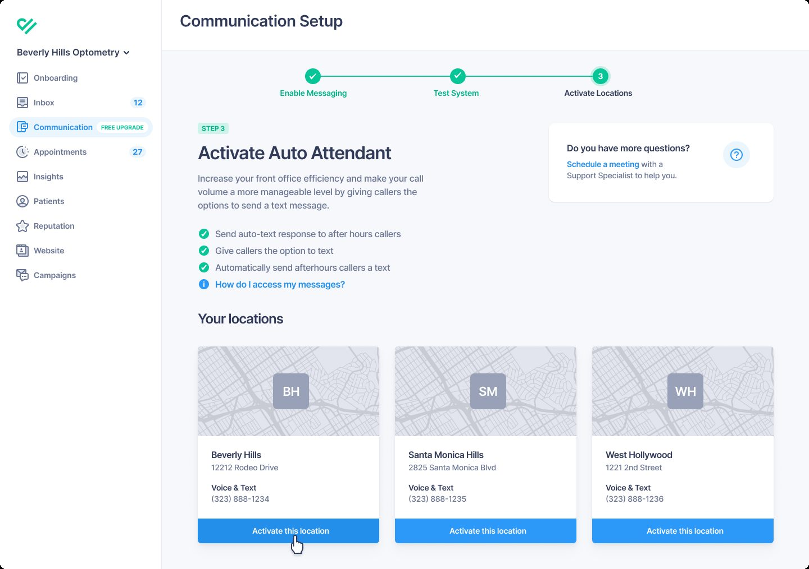
Bringing everything into one inbox
Web-to-text and automated attendant conversations joined the existing patient messaging, including automated appointment reminders, in one inbox. Each conversation showed where it came from, so front-desk staff didn’t have to switch between tools.
I designed how the features came together across onboarding, configuration, and the inbox. Practices could turn on the Connect package, then customize or turn off individual features.
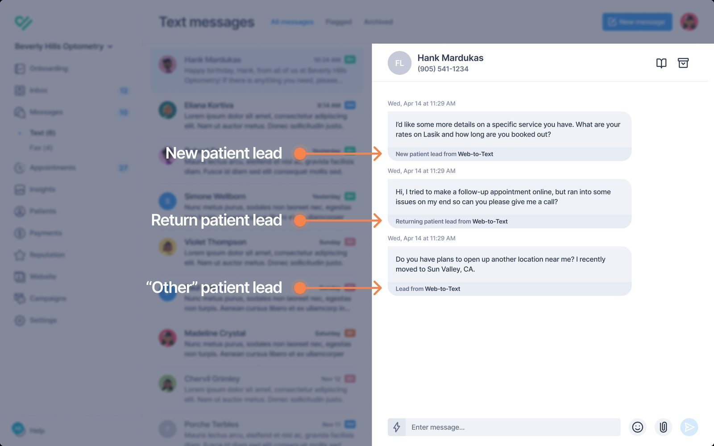
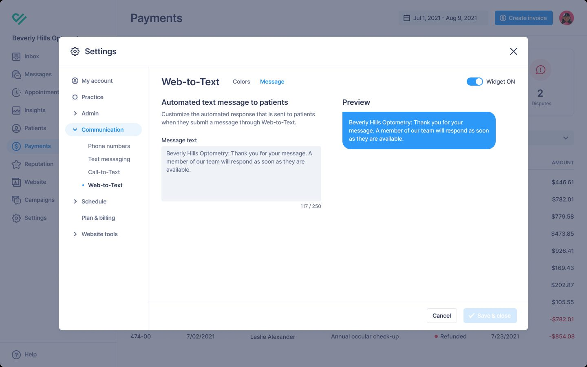
Results
increase in overall text messaging adoption
increase in text messaging usage among practices already using the service
We also documented two practices that adopted the automated attendant. One saw a substantial increase in new leads arriving by text after implementation.
These numbers reflect the broader messaging initiative, which included fixes to the existing product as well as the new Connect features.